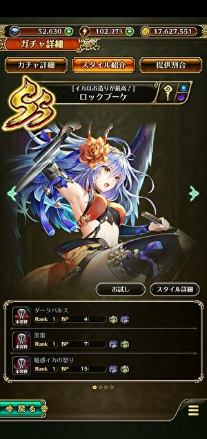

2020年のロマサガＲＳ佐賀県コラボを振り返る
ホーム > ロマサガＲＳ > ロマサガＲＳ佐賀コラボ_2020年
2020年のＧＷはロマサガＲＳの初のコラボイベント「ロマンシング佐賀 2020」が開催されました。
控えめに言って神イベだったこのイベントがこのまま風化してしまうのはもったいない。
少しでも多くの人に記憶に残っていてほしい。
また、知らなかった人がこのページを見て知ることができたらいいなと思ってこのページを作りました。
特に制圧戦が本当に気合入ってたと思っているので、制圧戦を中心に書いていこうと思います。
制圧戦全体マップ
制圧戦の全体マップがこれ。ロマ佐賀ＲＳでは、マップの名所・名物をタッチすると簡単な説明を見ることができるようになっていました。
説明を全部タッチしてGIFにしました。
（本当は七英雄の素材を作ってマップに配置したかったんだけど、素材づくりが間に合わなかった・・・）

静止で見たい方はこちら。
佐賀県の地図
制圧戦のマップを本物の佐賀県の地図と比べると、かなり忠実に作られていることがわかります。
制圧戦イベントでは、モンスターに制圧された場所を開放していくと、一日一体七英雄が出現する仕様になっていました。七英雄はその名所・名物にまつわる強力な技を使用してきました。以下、佐賀県の名所・名物と、登場した七英雄とその特徴となる技を紹介していきます。
竹崎かに
制圧戦１日目(4/26)
竹崎かにを担当する七英雄はクジンシー
佐賀コラボの固有技は「美味しい竹崎かに」と「ハサミ」
美味しい竹崎かにはLPを3も吸い取ってくる技。どんなキャラも2回喰らうと気絶してしまう。やめてくれ～。
本物の竹崎かに情報
太良町の観光情報サイトで紹介されている。かにうまそう～。
嬉野温泉（うれしのおんせん）
制圧戦２日目(4/27)
嬉野温泉を担当する七英雄はスービエ
佐賀コラボの固有技は「源泉掛け流し」と「嬉野で一杯！」。
嬉野で一杯でよっぱらったスービエはろれつが回らなくなり、以降使用する技はすべてひらがなになってしまう（笑）
本物の嬉野温泉の情報
嬉野温泉観光協会なるものがあるらしい。
こちらはそのホームページ（うれしの温泉情報局）

ワラスボ
制圧戦３日目(4/28)
ワラスボを担当する七英雄はボクオーン
佐賀コラボの固有技は「ガタウェーブ」と「有明海エイリアンズ」。
ガタウェーブはガタリンピックに因んだ技。
ボクオーンが操るワラスボは案外かわいい一面もあった（笑）
なんかさっき自分がつぶやいた画像、ワラスボがこう言っているように見えてきた。
— sagamax (@sagamax__) April 28, 2020
ワラスボかわいい#ロマサガRS pic.twitter.com/lIiNAKrLja
本物のワラスボの情報
写真

動画
1:25辺りに実際に動いているワラスボが・・・！！
呼子のイカ（よぶこのいか）
制圧戦４日目(4/29)
呼子のイカを担当する七英雄はノエル
佐賀コラボの固有技は「呼子の大量イカ」と「漁師のいかり」。
ノエルは腕力デバフで雑魚化して倒す人が多かった模様。１年前から進歩のないノエルェ・・・。
本物の呼子のイカ情報
佐賀県の唐津市呼子町は「イカの活造り」が生まれた町。
河太郎というお店が呼子のイカを使った活造りの発祥のお店らしい。
河太郎呼子店
唐津くんち
制圧戦５日目(4/30)
唐津くんちを担当する七英雄はロックブーケ

佐賀コラボの固有技は「荘厳華麗・唐津くんち」と「祭りばやし」。
荘厳華麗・唐津くんちは狂戦士状態になる全体攻撃技。
知力デバフで威力・狂戦士になる確率を下げて攻略する人が多かった。
本物の唐津くんち情報
本物の唐津くんちはこんな雰囲気。まさに「荘厳華麗」！！
佐賀牛
制圧戦６日目(5/1)
佐賀牛を担当する七英雄はダンターグ
佐賀コラボの固有技は「黒毛和牛「佐賀牛」」と「巨石投げ」。
巨石投げは、ダンターグの出現場所が「巨石パーク」という場所だったからそういう技を入れたんだと思う。
斬が弱点なので脳筋プレイで問題なく倒せた人が多かった模様。
本物の佐賀牛の情報
う、、、うまそう・・・・！！！！
公式サイトや公式のtwitterもある模様。興味ある方はフォローしてみては？
公式の佐賀牛のサイト
公式のtwitter
佐賀バルーンフェスタ
制圧戦７日目(5/2)
佐賀バルーンフェスタを担当する七英雄はワグナス
佐賀コラボの固有技は「上昇気流」と「バルーンフェスティバル」。
ワグナスは毒耐性が低めに設定されているため、毒で攻める戦法が流行るが、人によってワグナスの毒ダメージが違うことが話題になる。
ロマサガＲＳにおける毒ダメージは最大ＨＰの1/10のため、各自の育成度合いに応じて敵の強さが変わっている模様。
まーさんのと私のとで毒ダメージと違いますね。
— sagamax (@sagamax__) May 2, 2020
私がワグナスに与える毒ダメージ：23,069
まーさんの場合：23,948
各自のキャラクタの成長に合わせてHP違うのか・・・。#ロマサガRS #ロマ佐賀 #ロマンシング佐賀 https://t.co/oYM18SKVEQ pic.twitter.com/C4IabwCnsp
それについてガチで検証する人
ステ上げたら毒ダメが変わりました！
— WizardII (@wizardii_) May 2, 2020
恐らく所持スタイルの中で最大ステ合計(小数点込み)で決まっていて、ステ合計10刻みでダメージが違うようです
ステ合計 毒ダメ
1123.59〜1126.80 22207
1130.06 22429#ロマサガRS pic.twitter.com/MMLRwSIMAU
つられて検証する私
※リンク先はこちらに変更されています。ワラスボ後回しにしてワグナスの毒ダメージの検証をしていました。#ロマサガRS #ロマ佐賀 #ロマンシング佐賀
— sagamax (@sagamax__) May 2, 2020
ワグナス毒ダメ検証 https://t.co/2JP2CBstt9
本物の佐賀バルーンフェスタの情報
2020佐賀インターナショナルバルーンフェスタ
2020年は中止になってしまったようです。
しかしインターネットを使ったライブ配信を予定しているらしい。
無観客で夜間係留を実施 佐賀インターナショナルバルーンフェスタ代替イベント【佐賀県】
バルーンフェスタの公式のtwitterアカウントがあることを最近知ったのでリンク張っておきます。
佐賀バルーンフェスタ 公式ネットチーム
佐賀めぐり！
ワグナスを倒した後、満を持して登場した、佐賀コラボ制圧戦のラスボス「ワラスボ」。
ワラスボはラスボスのアナグラム・・・・・・ではないですよ（笑）
これまでの七英雄の技を使ってくる。８ターン目以降は鬼畜技「佐賀めぐり！」で、１ターンで７回連続攻撃を仕掛けてくる。
強すぎるワラスボにギブアップする河津神
#ロマサガRS #ロマンシング佐賀
— 河津秋敏 (@SaGa30kawazu) May 2, 2020
ワラスボに勝てません。皆さん、よろしくお願いします。
ワラスボを創造した人（ある意味神）ですら苦戦
制圧戦はこんな感じでした。連携でイカが5回飛んでくれたら #ワラスボ 倒せたところだったのにorz
— Seizan Shimazaki (@seizans) May 2, 2020
いや～、楽しかった！
登場した新スタイル
佐賀コラボで登場したスタイルもすべて佐賀に因んだ技を持っているのでここでご紹介。
アセルス
技
アセルスの新技「エンヤーヨイサー」は、出てくるお供が三種類存在している。 唐津くんちの動画を見れば、これを再現しているということがわかりますね。
「唐津くんち」の動画
— sagamax (@sagamax__) April 28, 2020
1:28あたりに緑色の顔のやつ
1:35あたりに赤の顔のやつ
1:37あたりに魚https://t.co/sbBhVoFTLw
赤い魚
獅子舞（緑）
獅子舞（赤）
ロックブーケ
技
魅惑イカの怒りは呼子のイカに因んだ技。よく見るとイカの目がハートになっている。
ロックブーケのイカの怒り、よく見たらイカの目がハートになってた😍
— sagamax (@sagamax__) April 29, 2020
本当は怒ってないのではないか？#ロマサガRS #ロマ佐賀 #ロマンシング佐賀 pic.twitter.com/i0OOQ6fKAi
佐賀県関係ないけど、１年以上待ち続けていた複属性杖がついに実装されたのもビックリでした！！
ちょっと待って❗なにこれ⁉️今気づいたんだけど。ブーケ人権じゃん‼️#ロマサガRS pic.twitter.com/paBDYyfltC
— sagamax (@sagamax__) April 27, 2020
T260G
技
ガタリンピックというイベントに因んだ「ガタスプレッド」という全体攻撃技を持つスタイル。 カウンターでもガタスプレッドを放って全体攻撃するというとんでもないアビリティを持つ。これは凄い！
動画ありがとうございます！
— sagamax (@sagamax__) April 27, 2020
これが噂の全体カウンターｗｗ
たしかにこれはやばそうｗｗ
デトックスも「これこれ！これが欲しかったの！！」って感じです😂
ちなみにガタスプレッドはOverDriveのゲージが貯まりやすいという特徴もある模様。
ガタスプレッドのOverDriveゲージ増加量が30%もあるのでカウンター発動すれば一瞬でODたまりそう
— ちん (@chin_ohnck) April 27, 2020
タリア
技
知力上昇アビリティで知力を上げてからのアリタペトラ。相手は石化する。
知力が高く、石化率が高いため、耐性が低い相手には無双できる。
アリタペトラの皿の真ん中に「SaGa」って書いてる・・・！！
気付かれてなさそうな予感がしたのでこれも。
— sagamax (@sagamax__) April 28, 2020
タリアのアリタ・ペトラの皿の真ん中にSaGaって書いてある。
芸が細かすぎます・・😍#ロマサガRS pic.twitter.com/M4RlpZh1fy
そんなタリアさんの新スタイルを祝うツイート。おめでとうございます！
タリアさん、新スタイルおめでとうございます🎉 pic.twitter.com/rEpDZHAYR9
— 雨史さん@サガ好きな蛙 (@amemiyan_saga) May 2, 2020
タリアという名前は、佐賀県有田町発祥の焼き物の『有田焼』からとられているらしい（アリタを逆から読んだらタリア）。
今回のイベントで出なかったらいつ出るんだ！？っていうぐらいのキャラクターだったんですね。
ニコニコ大百科 タリア
ニュースにまで・・・！！
NHKのニュースになってる・・・！（リンク先に動画あり）
すんごい！！！！！
県の風物など登場のゲームが話題｜NHK 佐賀県のニュース https://t.co/iwpOg3LCEQ
— 市川雅統 Masanori Ichikawa (@saga_ichikawa) May 13, 2020
毎日新聞
ニュースになってたw
— ばにふら@ロマサガRS(七分咲き (@NXISuB0XqC6CAL4) May 12, 2020
ワラスボも大暴れ ゲーム「ロマンシングサガRS」 佐賀舞台にコラボキャラとバトル - 毎日新聞 https://t.co/9M48ev5cto
その他
twitterを見ていて興味を引いたもの。
佐賀コラボ七英雄が出揃ったので特殊技をまとめた動画。かっこいい！
佐賀コラボ七英雄が出揃ったので特殊技をまとめた動画を作りました☺️
— ロマサガRS攻略@GameWith (@romars_GW) May 2, 2020
どれも演出にこだわりが見られる😎
七英雄好きな人に届け🐙#ロマサガRS pic.twitter.com/GXjQ4gVprp
牛に話しかける謎の遊びが流行る（笑）
とてもじゃないけど全部はピックアップはできないので興味ある方はここで探してみて
節子、それイカやない。牛や。#ロマサガRS pic.twitter.com/pJP4l5AQsD
— Mid-night (@Midnigh09841678) May 10, 2020
牛さん逃げて…#ロマサガRS pic.twitter.com/owbjUUZB7b
— うえさま@乱れ日月火 (@uesama0706) May 12, 2020
#ロマサガRS
— oyana (@_o_y_a_n_a) May 16, 2020
みなさんの牛に話しかけるシリーズ楽しませてもらっています。そろそろ終わりなので、さみしくなりますね。 pic.twitter.com/3WlxJT4qHg
あなたに幸いが訪れますように・・・って仰ってますが🧐
— さとちゃんGAMES (@GAMES84207731) May 12, 2020
この牛さんの末路って・・・
みんなには喜ばれるとはおもうけど・・・ねぇ😅#ロマサガ #ロマサガRS #ロマ佐賀 pic.twitter.com/y0OxarA1W4
牛さん、いつもありがとう。#ロマサガRS pic.twitter.com/tdsTByMP5u
— しぇりろま@＼サガ！！／ (@sherylatro) May 16, 2020
今更ながら牛に話しかけるやつ、個人的はゆきだるまとプラタリアがツボですた(°▽°)#ロマサガRS pic.twitter.com/bZQMjOitSa
— たれ (@L6XYRfJqxILWX8X) May 16, 2020
皆さん牛に話を聞いてもらうのが流行ってるみたいで、ウチでもストライフさんが話を聞いてもらってました(´∇｀)❁⃘*.ﾟ#ロマサガRS #力こそパワー pic.twitter.com/OTIyxXiRnE
— きんじろぅ@ロマサガRS (@RS76562279) May 15, 2020
ゆきだるまからのまさかの牛一頭のプレゼントw
— 黒豆柴 (@W8UsXHdu2XHLznK) May 16, 2020
たまたまタッチしたらナイスタイミングw
思わず笑ってしまいました(・∀・)#ロマサガRS pic.twitter.com/bVSpf5sOtO
流行りの牛に話しかけるチャレンジしてみた♪.°ʚ(*´꒳`*)ɞ°.#ロマサガRS pic.twitter.com/RzKpQ9F3ys
— かりんこ⌄̈⃝ (@KarinkoRs) May 17, 2020
#ロマサガRS
— ヘルニキ (@HERUNIKI) May 18, 2020
牛に話しかける人々シリーズが、
面白かったので便乗しますw pic.twitter.com/Dn6mlF9r5z
#ロマサガRS
— ヘルニキ (@HERUNIKI) May 18, 2020
うーん、無理w pic.twitter.com/Isg0kZU1tA
これは牛関連
ロマサガで牛をツイートしてる人がいるけど、自分の中でゲームで牛といったらこれを思い出す。 pic.twitter.com/AoIVhrtDVV
— 村雨@P_FF (@murasame_2000) May 12, 2020
最後に公式サイトへのリンクを張って終わりにしたいと思います。
ロマンシング佐賀 2020
以上！